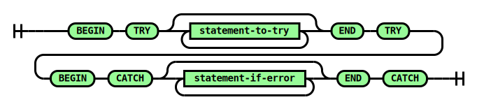

TRY/CATCH Statement
Executes the stmt-to-try statements
in order until successful completion or until one of the statements throws an error. If an error is thrown, then
stmt-if-error statements are executed. The statements in the
CATCH block may use the ERROR_NUMBER, ERROR_MESSAGE, and ERROR_STATE functions to access the thrown error information.
Syntax

Arguments
-
stmt-to-try (statement)
The statements to execute. These statements may THROW an error,
causing execution to divert to the stmt-if-error statements.
-
stmt-if-error (statement)
The statements to execute if any stmt-to-try throws an error. These
statements may use the ERROR_NUMBER, ERROR_MESSAGE, and ERROR_STATE functions to access the thrown error information.
Examples
BEGIN TRY
THROW 0, 'Foo', 0;
END TRY
BEGIN CATCH
PRINT ERROR_MESSAGE();
END CATCH
Prints "Foo".